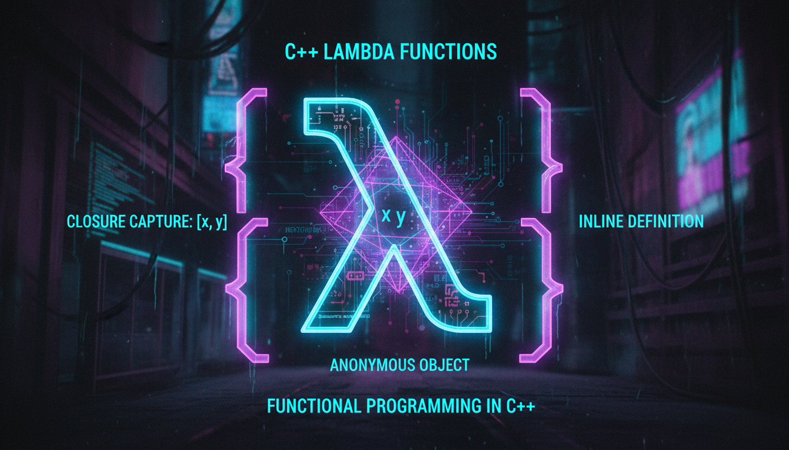

Lambda expressions, captures, return type, приклади використання

Лямбда-функція — це анонімна функція, яку можна визначити прямо у місці використання.
#include <iostream>
#include <vector>
#include <algorithm>
int main() {
// Синтаксис: [captures](parameters) -> return_type { body }
// Проста лямбда
auto greet = []() {
std::cout << "Привіт!" << std::endl;
};
greet();
// Лямбда з параметрами
auto add = [](int a, int b) -> int {
return a + b;
};
std::cout << "5 + 3 = " << add(5, 3) << std::endl;
// Лямбда з автоматичним типом повернення
auto multiply = [](double a, double b) {
return a * b;
};
// Захват змінних (capture)
int factor = 10;
auto multiplyByFactor = [factor](int x) {
return x * factor; // factor захоплено за значенням
};
std::cout << "7 * 10 = " << multiplyByFactor(7) << std::endl;
// Захват за посиланням
int sum = 0;
std::vector<int> numbers = {1, 2, 3, 4, 5};
std::for_each(numbers.begin(), numbers.end(), [&sum](int x) {
sum += x;
});
std::cout << "Сума: " << sum << std::endl;
// Захват всіх за значенням [=]
// Захват всіх за посиланням [&]
// Змішаний: [=, &var] або [&, var]
return 0;
}